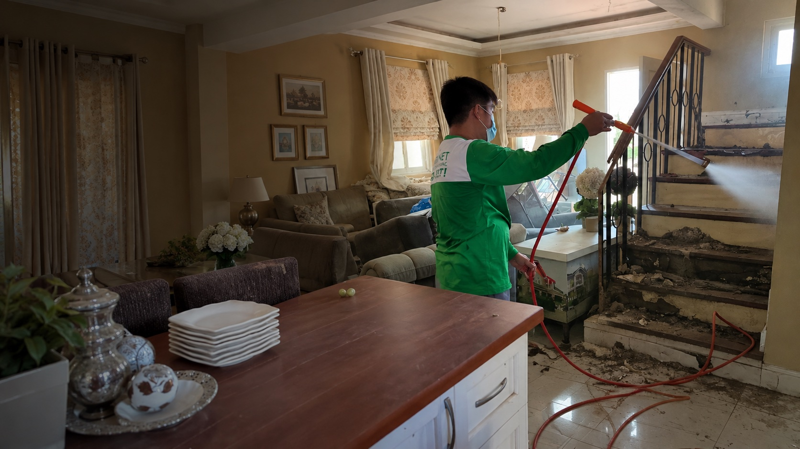

Makati City Philippines
For homes and businesses
Pest control
in Makati City.
Thoughtfully done.
What a closer look changes
The visible sign
is a starting point.
Termites, cockroaches, ants and other pests rarely arrive without a route or reason. Environet looks beyond the sighting to help find a suitable response for your property.
What you noticeThe first sign: a damaged surface, an unexpected visitor, a recurring concern.
Where it travelsThe paths, entry points and conditions around the problem.
What needs attentionA treatment plan shaped by the source and by your space.
A considered response begins here
Where we step in
Real protection
takes different forms.
From the structure beneath your feet to the surfaces you touch, choose the concern closest to yours.
A better environment
changes everything.
Environet began with termite control and has grown to support homes, workplaces and industrial spaces with broader pest management and disinfection services.
Meet the Makati teamYour next move
LET'S GET
YOUR SPACE
BACK.
Tell us what you have noticed. The Makati team can help you decide what to do next.
0998 588 8784Environet MakatiLevel 5, Laureano di Trevi Tower
2216 Chino Roces Avenue
Makati City, Metro Manila 1233Get directions
2216 Chino Roces Avenue
Makati City, Metro Manila 1233Get directions